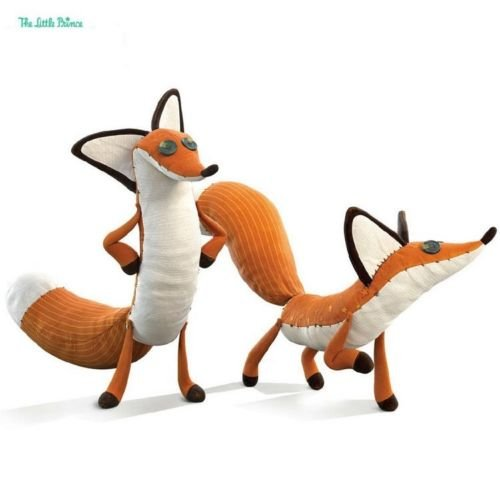

Likovi
Mali Princ
Mali Princ je dete suprotstavljeno svetu odraslih. Svi likovi sa malih planeta koje posećuje (kralj, hvalisavac, pijanac..) su oličenje mana savremenog sveta i sveta odraslih.
Lisica
Lisica je ta koja Malog Princa uči da se gleda srcem a ne očima.Takodje ona traži od njega da je pripitomi što za nju znači da se izmedju dve osobe razvije duboko poznantsvtvo i razumevanje.Tim
zmija
Zmija može predstavljati i samu smrt. Kako bi se Mali Princ vratio na svoju planetu, on dozvoljava otrovnoj zmiji da ga ujede, jer njegova je planeta jako daleko i on svoju "ljusku" ne može sam da ponese.
Kralj
Kralj je lik koga Mali Princ upoznaje, a koji tvrdi da ima apsolutnu moć nad svim što ga okružuje.
Uobrazenko
Uobraženko je tipičan primer ljudi koji stalno vole, i misle da su u centru pažnje.On vidi sebe kao najzgodnijeg i najinteligentnijeg čoveka na svojoj malenoj planeti.

Kralj
Pijanica živi sam sa svojom flašama i provodi svoje vreme pijući kako bi zaboravio da ga je sramota što je pijanica. Malom Princu je jasno da je pijanica nesrećan i da mu je potrebna pomoć.Ali Pijanica se, ipak povlači u svoju tugu i tišinu.
Poslovni covek
Poslovni čovek, džentlmen koji je veoma zauzet da čak nema vremena ni svoju cigaru da zapali.Svoje vreme provodi brojeći zvezde, za koje tvrdi da su njegovo vlasništvo. Mali Princ pokušava da mu kaže da troši svoj život i vreme brojeći nešto što ne može biti ničije. I tako Mali Princ još jednom otkriva da su odrasli jako razočaravajući.
Covek sa fenjerom
Čovek sa fenjerom je osoba kojom je Mali Princ bio očaran.Mislio je da je njegov posao koristan : da upali fenjer kada Sunce zadje.Ali njegova planeta se toliko brzo okreće da jadni čovek nema vremena ni za šta drugo.Mali Princ je opet ostao razočaran, ali se ipak divio trudu koji ovaj čovek pokazuje.